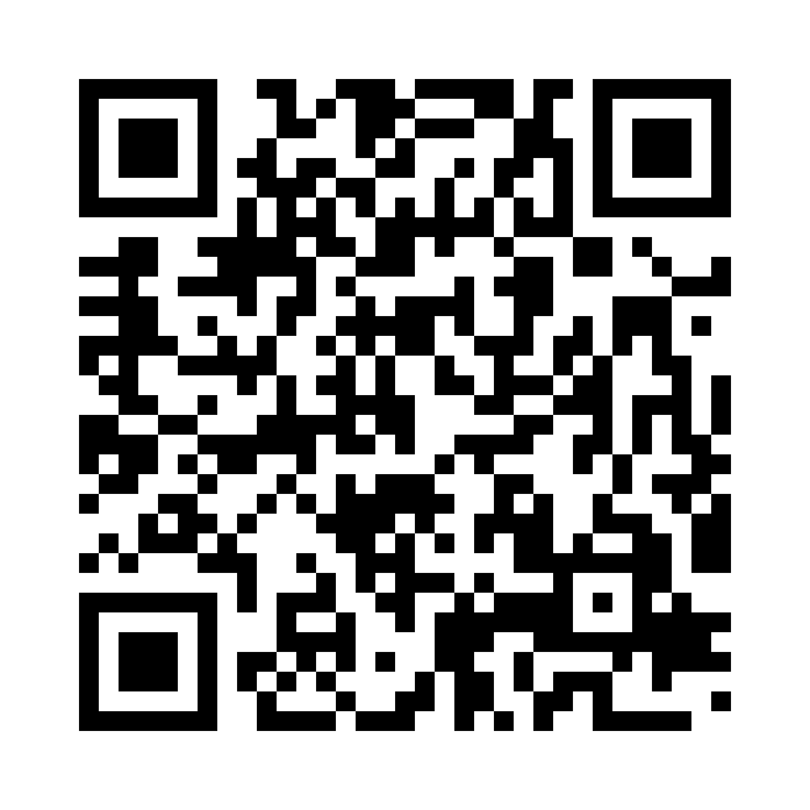

Størrelsesforholdet er vejledende: klistermærket er tænkt som ca. 9 × 13 cm, skiltet som ca. 120 × 60 cm. Byt QR-kode og URL ud pr. plads (Vojens/Roskilde).
1 · QR-klistermærke (lille)

Scan koden og tag et billede af dit affald, så viser guiden den rigtige container.
easysort.org/provas/vojens
Provas · Easysort
2 · Metalskilt ved sorteringsguiden (stort, rektangulært)
Vojens Genbrugsplads
Vis dit affald til kameraet og få svar på 8 sekunder
Provas · Easysort